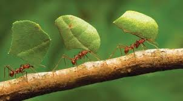

Fatos Interessantes
Existem mais de 12.000 espécies de formigas conhecidas!
Podem existir mais de oito milhões de formigas em apenas um hectare de floresta de terra-firme na Amazônia;
Algumas espécies de formigas são utilizadas na alimentação dos seres humanos. Nesse caso, elas são torradas;
O estudo das formigas denomina-se mirmecologia.
